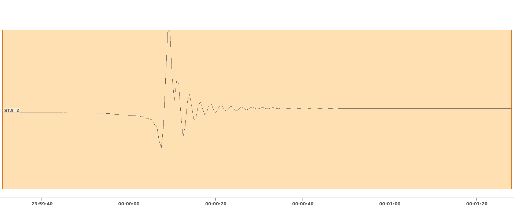

The Pseudo Dynamic Rupture model
Malte Metz, Marius Isken, Sebastian Heimann, Torsten Dahm
How is it working?
Define rupture plane

Define stress drop

Get final static slip

slip linked to stress drop using Okada (1992)
Get slip snap shots

How to use it within Pyrocko?
Source generation and setup
Content
Source generation
from pyrocko.util import stt
from pyrocko.gf import PseudoDynamicRupture
# Define source
source = PseudoDynamicRupture(
lat=37.821, lon=26.868,
depth=1000.,
time=stt('2020-10-30 11:51:24.955471'),
strike=275.0, dip=57.5, rake=90.,
length=65000., width=25000.,
anchor='top',
nucleation_x=0.28, nucleation_y=0.66,
gamma=0.82,
nx=8, ny=5)
Source generation - What are the parameters?
| Parameter | Definition | Range |
|---|---|---|
| gamma | \(\gamma = v_{rupture} / v_s\) | 0 - ... |
| nx | Number of patches along strike | 1 - ... |
| ny | Number of patches down dip | 1 - ... |
| nucleation_x | Hypocenter on fault along strike | -1 - 1 |
| nucleation_x | Hypocenter on fault down dip | -1 - 1 |
| lat, lon, depth | Fault anchor location |
Get final static slip and plot it
from pyrocko.gf import LocalEngine # for GF handling
from pyrocko.plot.dynamic_rupture import RuptureMap
# Load store
engine = LocalEngine(store_superdirs=['.'])
store = engine.get_store('ak135_2000km_1Hz')
# Define source subfaults (patches) using store
# ground model parameters
source.discretize_patches(store)
# Plot source dislocation on map and save
m = RuptureMap(
source=source,
lat=source.lat, lon=source.lon,
radius=source.length)
m.draw_dislocation() # final static dislocation
m.draw_time_contour(store) # rupture front contour
m.draw_nucleation_point() # hypocenter
m.draw_top_edge() # Indicate top edge of fault
m.save('map_final_dislocation.pdf')
Get final static slip and plot it

Small slip? Lets fix that ...
Scale slip using slip
# Scale slip giving maximum slip [m]
source.slip = 1.2
which leads to ...
Scale slip using Slip

Scale slip using tractions
# IMPORTANT reset all other scaling measures:
# slip and rake
source.slip = None
source.rake = None
source.tractions = DirectedTractions(
rake=-90., # direction of stress drop vector
traction=1e6) # length of stress drop vector in [Nm]
Rescale slip using magnitude/moment
# IMPORTANT reset all other scaling measures:
# tractions
source.tractions = None
# Set rake and initial slip
source.rake = -90.
source.slip = 1.
# Scale slip giving seismic moment m0 [Nm]
source.rescale_slip(moment=4.677351412872e+19, store=store)
# OR
source.rescale_slip(magnitude=7.08, store=store)
Source moment rate function and plot
from pyrocko.plot.dynamic_rupture import RuptureView
view = RuptureView(source=source)
view.draw_source_dynamics('stf', store)
view.show_plot()
results in ...
Source moment rate function and plot

Source magnitude
magnitude = source.get_magnitude(store)
print("Mw: {}".format(magnitude))
will give "Mw 7.08"
Centroid location and mechanism
centroid = source.get_centroid(store)
print(centroid)
yields
--- !pf.Event
lat: 37.87407562819072
lon: 26.873882634609338
time: '2020-10-30 11:51:34.674575567'
depth: 10299.289199739556
magnitude: 7.079999999999977
moment_tensor: !pf.MomentTensor
mnn: 4.2069191291047485e+19
mee: 3.2200879087675456e+17
mdd: -4.2391200081924235e+19
mne: 3.6805773216702147e+18
mnd: 1.969212053525339e+19
med: 1.72283730762069e+18
strike1: 275.0
dip1: 57.5
rake1: -90.00000000000006
strike2: 95.0000000000001
dip2: 32.500000000000014
rake2: -89.99999999999994
moment: 4.677351412871616e+19
magnitude: 7.079999999999977
duration: 16.46420379887617
Create small movies/gifs
from pyrocko.plot.dynamic_rupture import rupture_movie
rupture_movie(
source, store, 'dislocation',
plot_type='map')
rupture_movie(
source, store, 'slip_rate',
plot_type='map')
results in ...
Create small movies/gifs
Normalized slip
Normalized slip rate
How to use it within Pyrocko?
Forward modeling in Python
Import
import os.path as op
from pyrocko import gf
km = 1e3
Green's function loading
# The store we are going extract data from:
store_id = 'crust2_mf'
# First, download a Greens Functions store. If you already have one that you
# would like to use, you can skip this step and point the *store_superdirs* in
# the next step to that directory.
if not op.exists(store_id):
gf.ws.download_gf_store(site='kinherd', store_id=store_id)
# We need a pyrocko.gf.Engine object which provides us with the traces
# extracted from the store. In this case we are going to use a local
# engine since we are going to query a local store.
engine = gf.LocalEngine(store_superdirs=['.'])
# The dynamic parameter used for discretization of the PseudoDynamicRupture are
# extracted from the stores config file.
store = engine.get_store(store_id)
Generate source
# Let's define the source now with its extension, orientation etc.
dyn_rupture = gf.PseudoDynamicRupture(
# At lat 0. and lon 0. (default)
north_shift=2.*km,
east_shift=2.*km,
depth=3.*km,
strike=43.,
dip=89.,
rake=88.,
length=26.*km,
width=12.*km,
nx=10,
ny=5,
# Relative nucleation between -1. and 1.
nucleation_x=-.6,
nucleation_y=.3,
slip=1.,
anchor='top',
# Threads used for modelling
nthreads=1,
# Force pure shear rupture
pure_shear=True)
Rescale slip according to magnitude
# Recalculate slip, that rupture magnitude fits given magnitude
dyn_rupture.rescale_slip(magnitude=7.0, store=store)
Generate target
# Model waveforms for a single station target
waveform_target = gf.Target(
lat=0.,
lon=0.,
east_shift=10.*km,
north_shift=10.*km,
store_id=store_id,
code=('', 'STA', '', 'Z'))
Forward modeling and waveform display
result = engine.process(dyn_rupture, waveform_target)
result.snuffle()
which yields ...
Forward modeling and waveform display
screen shot from Snuffler
How to use it within Grond?
Bayesian bootstrap based optimization
Installation - Required from source
# Create src directory (if not done already)
mkdir src
cd src
# download grond
git clone https://git.pyrocko.org/pyrocko/grond
# Go into Grond directory ~/src/grond and
git fetch --all # get all Pyrocko development branches
git checkout dyn_rupt # checkout dyn_rupt branch
sudo python3 setup.py install # if python2 use python
Define a PDR problem - the config
...
problem_config: !grond.DynamicRuptureProblemConfig
name_template: 'pdr_${event_name}'
ranges:
time: '-20 .. 20 | add' # Origin time
# Top edge center location with respect to
# input event
north_shift: '-40e3 .. 40e3'
east_shift: '-50e3 .. 50e3'
depth: '1e3 .. 15e3'
# Fault plane dimensions
length: '2e3 .. 30e3'
width: '2e3 .. 10e3'
# Fault plane orientation
strike: '-75. .. 165.'
dip: '0. .. 90'
# Mechanism and slip
rake: '60. .. 160.'
slip: '0.01 .. 5'
# Kinematic parameters (origin location
# and rupture velocity ratio)
nucleation_x: '-1. .. 1.'
nucleation_y: '-1. .. 1.'
gamma: '0.6 .. 0.8'
# Number of finite faults along
# strike (x) and downdip (y)
nx: '2 .. 5'
ny: '2 .. 4'
# Number of parallel processes
# (more than 4 does not make any difference)
nthreads: 4
# If True, reduces effort of target weighting by using
# point sources
point_source_target_balancing: True
# Should be at one to obtain accurate unbiased results
decimation_factor: 1
# The adaptive resolution controls, if the number of
# patches is increased within the inversion.
adaptive_resolution: linear # How is it increased
adaptive_start: 3000 # At wich sample does it start
# If True, no opening is allowed.
pure_shear: True
# Each fault patch is represented by a number of point
# sources. If set to True, each of them can rupture at
# a time according to the rupture propagation. If False
# all point sources of one patch rupture at the same
# time
smooth_rupture: True
...
Optimization run
# Start optimization with threads given
grond go config/pdr_config.gronf --threads=4
# Once done, generate the report with
grond report -so runs/pdr_run.grun --threads=4
Summary
New features:
- Calculation of Okada (1992) based dislocations and derivatives in an elastic half space
- Fully functional new quasi dynamic rupture model based on Dahm et al. (2021)
- Plotting functions for fast and user friendly source result display
- New inversion method implemented within Grond and applied e.g. within Metz et al. (2022)
Be aware!
- Change of nucleation point location or time needs forced recalculation of patches:
source.discretize_patches(store, force=True)